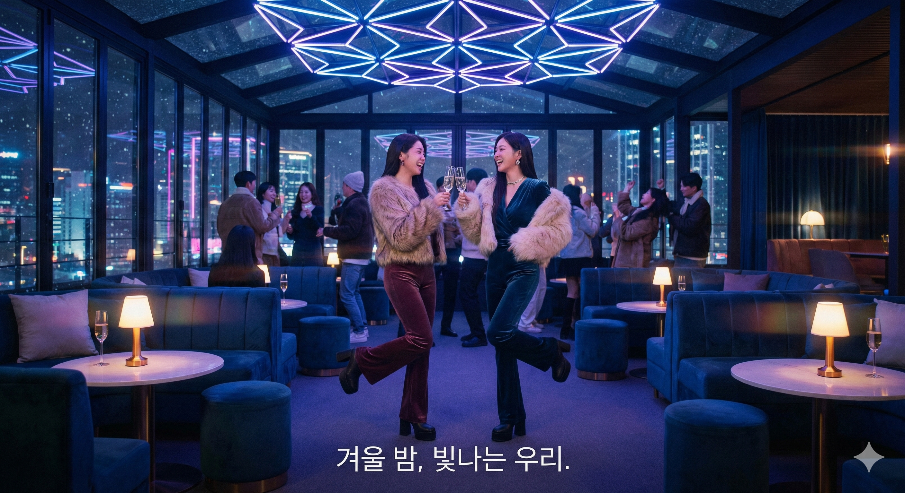

일산샴푸나이트, 방문 전 궁금한 점을 질문별로 정리합니다
일산샴푸나이트는 어디에 위치하나요?
일산샴푸나이트는 경기도 고양시 일산 지역 중심 상권 내에 자리하고 있습니다. 지하철역에서 도보로 접근이 가능한 거리이며, 주변에 대형 상업시설과 음식점이 밀집해 있어 방문 전후 이동이 수월합니다.
자차 이용 시 인근 공영주차장을 활용할 수 있으나, 금요일과 토요일 야간에는 주차 공간이 부족해질 수 있습니다. 대중교통을 우선 고려하시는 것이 편리합니다.
일산샴푸나이트, 어떤 시간대에 방문하면 좋을까요?
방문 시간대에 따라 공간의 밀도와 분위기가 크게 달라집니다. 처음 방문한다면 비교적 여유로운 초반 시간대를 선택하는 것이 공간 파악에 유리합니다.
| 시간대 | 밀도 | 분위기 | 추천 대상 |
|---|---|---|---|
| 20~22시 | 낮음 | 차분한 톤 | 첫 방문자 |
| 22~00시 | 보통 | 점차 활발 | 소규모 그룹 |
| 00~02시 | 높음 | 에너지 최고조 | 분위기 선호층 |
공간은 어떻게 구성되어 있나요?
일산샴푸나이트의 내부는 진입 구간, 메인 홀, 사이드 좌석 영역으로 구분됩니다. 메인 홀은 음향 장비와 조명이 집중 배치된 핵심 공간이며, 사이드 좌석은 대화가 가능한 수준의 소음으로 유지됩니다.
동선은 자유 이동 방식으로, 특정 순서를 따를 필요 없이 원하는 구역을 오갈 수 있습니다. 처음이라면 진입 후 전체를 한 바퀴 둘러보며 구조를 파악하는 것을 권장합니다.

방문 전 4단계 체크
신분증 확인
만 19세 이상만 입장 가능합니다. 실물 신분증을 반드시 지참하세요.
복장 점검
운동복·슬리퍼는 입장이 제한될 수 있습니다. 깔끔한 캐주얼 이상을 권장합니다.
교통 수단 결정
주말 야간 주차 혼잡을 고려해 대중교통 이용을 우선 검토하세요.
시간대 선택
자신의 성향에 맞는 시간대를 사전에 정해두면 만족도가 높아집니다.
마무리 안내
일산샴푸나이트는 일산 지역 중심 상권에 위치한 야간 엔터테인먼트 공간으로, 시간대와 방문 목적에 따라 체감이 달라집니다. 위 질문별 정리를 참고하여 본인에게 맞는 방문 계획을 세워보시기 바랍니다.
본 페이지는 정보 안내 목적의 콘텐츠이며, 특정 서비스를 홍보하거나 대가성 중개를 제공하지 않습니다.
정책 고지
본 페이지는 정보 제공 목적이며 불법·유해 콘텐츠 및 알선/매칭 등으로 오해될 수 있는 서비스를 제공·홍보하지 않습니다. 이미지/텍스트는 권리 범위 내 사용을 원칙으로 하며 권리침해 요청 시 신속히 조치합니다.